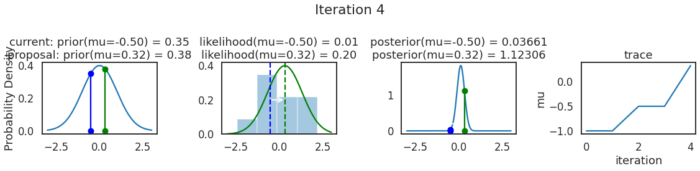
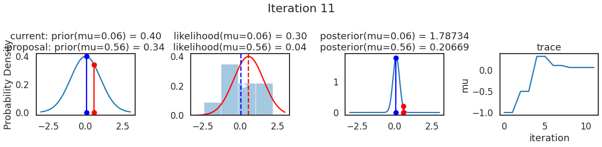
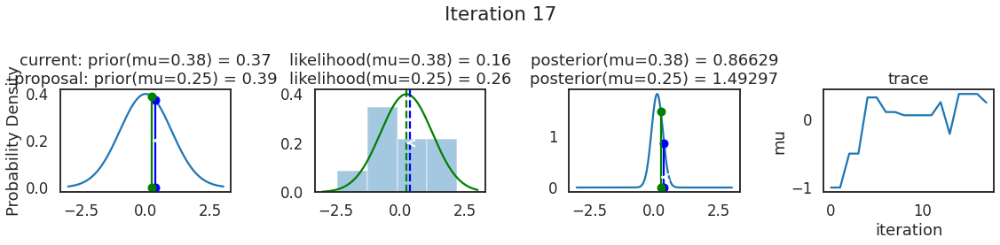
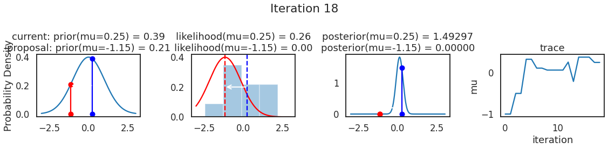
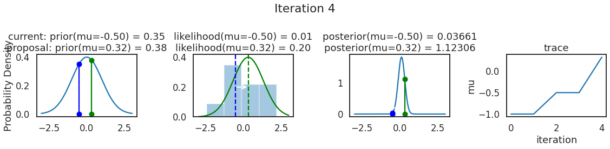
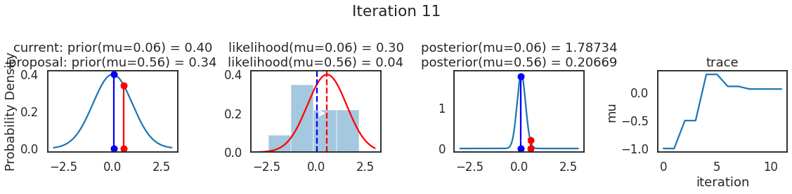
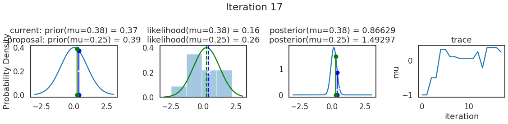
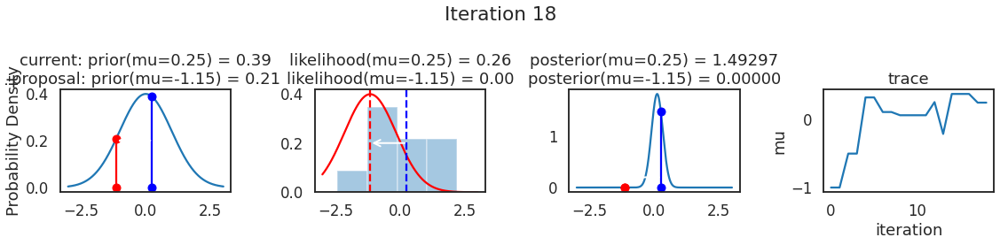

附录 A： MCMC 推断
Contents
附录 A： MCMC 推断¶
【原文】 MCMC sampling for dummies — While My MCMC Gently Samples (twiecki.io)
当谈论概率编程和贝叶斯统计时，通常会掩饰统计推断实际执行的细节，本质上将其视为黑匣子。概率编程好处在于“不必为构建模型而理解推断的工作原理”，但了解其原理肯定会有所帮助。
当我向新手介绍一个贝叶斯模型时，他虽然没有接受过贝叶斯统计方面的培训，但通常渴望理解推断原理。而我之前的回答往往是：“ MCMC 通过构造一个以目标后验分布为平衡分布的可逆马尔可夫链，通过从后验分布中产生样本来做预测等后续任务。” 这句话没错，但似乎没有用。这很恼火，因为从来没有人告诉你概念背后的直观感觉或者动机，通常只是给你一些可怕的数学知识。我不得不花无数小时用头撞墙，直到顿悟时刻的到来。通常情况下，一旦我理解了其意思，事情就看起来不那么复杂了。这篇维基百科 试图解释 MCMC 采样背后的动机，感兴趣的读者可以去看一看。
下面使用代码示例，而不是公式或数学语言，开始建立直观感觉。
1 问题及其非直观的解释¶
首先看贝叶斯公式：
在给定数据情况下，能够得到模型参数 \(z\) 的概率分布。为计算它，将先验 \(P(z)\) 和似然 \(P(x|z)\) 相乘得到分子项。通常分子项非常简单，因为先验和似然都来自于主观或经验的假设，但分母项 \(P(x)\) （见式 A.2 ，即边缘似然，也称证据），会发现它来自于对所有可能参数值的积分，除了共轭情况外，在大多数情况中，边缘似然是很难处理的。而这恰恰就是贝叶斯定理的关键难点：尽管公式足够简单，但很难以封闭方式计算后验结果。
提醒： 『模型参数』通常是机器学习领域的概念（常用符号 \(\theta\) 表示），但在统计学领域（尤其是贝叶斯领域），通常称其为不可观测变量或隐变量，并用 \(z\) 表示。
当我们难以简单地解决问题时，可以尝试去近似它。如果能够想办法从后验分布中抽取足够有效的样本，那么就可以利用这些样本来进行后续任务的近似计算。但新问题出现了，根据 CDF 采样原理，要直接从后验分布中抽取样本，不仅要求解贝叶斯公式，还要求出后验分布的逆函数，这就更难了。
能否构建一个可遍历的可逆马尔可夫链，使其均衡分布与后验分布相匹配呢？ 这听起来很疯狂，因为如果你无法计算后验，不能从中取样，那么构建这样的马尔可夫链肯定会更加困难 ！！！
但令人惊讶是，这个想法非常容易实现，并存在一类通用算法来支撑，被称为马尔可夫链蒙特卡罗（ MCMC ），即构造马尔可夫链进行蒙特卡罗逼近。
2 问题设置¶
首先，让导入 python 模块：
%matplotlib inline
import numpy as np
import scipy as sp
import pandas as pd
import matplotlib.pyplot as plt
import seaborn as sns
from scipy.stats import norm
sns.set_style('white')
sns.set_context('talk')
np.random.seed(123)
先生成一些实验数据，以零为中心的正态分布上的 20 个点。我们的目标是估计平均值 \(\mu\) 的后验。
data = np.random.randn(20)
ax = plt.subplot()
sns.distplot(data, kde=True, ax=ax)
_ = ax.set(title='Histogram of observed data', xlabel='x', ylabel='Num of observations')
/opt/hostedtoolcache/Python/3.8.12/x64/lib/python3.8/site-packages/seaborn/distributions.py:2619: FutureWarning: `distplot` is a deprecated function and will be removed in a future version. Please adapt your code to use either `displot` (a figure-level function with similar flexibility) or `histplot` (an axes-level function for histograms).
warnings.warn(msg, FutureWarning)
接下来定义模型。
在这个简单示例中，假设总体和样本呈正态分布（即模型的似然是正态分布）。正态分布有两个参数：均值（ \(\mu\) ）和标准差（ \(\sigma\) ）。为简单起见，假设已知 \(\sigma=1\)，想要推断 \(\mu\) 的后验。
根据贝叶斯原理，对于每个想要推断的参数，必须选择一个先验。为简单起见，仍然假设参数 \(\mu\) 呈正态分布，且均值 \(\mu_\mu = 0\) ，标准差 \(\mu_\sigma = 1\) ，即将标准正态分布作为 \(\mu\) 的先验分布。从统计学角度，模型是：
该模型较为简单，实际上是能够获得后验的封闭形式解的，但在此我们为了讲解方便将采用 MCMC 推断。
为什么会有封闭形式的解？
因为对于服从正态分布的似然函数而言，参数 \(\mu\) 的正态先验与后验是共轭的，可以较为容易地计算后验。有关共轭先验的知识，请参见维基百科。
# Analytical posterior of Guassian
def calc_posterior_analytical(data, x, mu_0, sigma_0):
sigma = 1.
n = len(data)
mu_post = (mu_0 / sigma_0**2 + data.sum() / sigma**2) / (1. / sigma_0**2 + n / sigma**2)
sigma_post = (1. / sigma_0**2 + n / sigma**2)**-1
return norm(mu_post, np.sqrt(sigma_post)).pdf(x)
ax = plt.subplot()
x = np.linspace(-1, 1, 500)
posterior_analytical = calc_posterior_analytical(data, x, 0., 1.)
ax.plot(x, posterior_analytical)
ax.set(xlabel='mu', ylabel='belief', title='Analytical posterior');
sns.despine()
上述代码显示了我们的感兴趣的量，即在考虑到先验信息并看到数据后，参数值 \(\mu\) 的概率分布。但需要清楚，当先验假设并非共轭时，很难获得如此简单的封闭形式解。
3 MCMC 采样的代码说明¶
现在来理解 MCMC 的采样逻辑。首先找到起始参数位置（通常是随机选择的），让我们将其随意地设定为 1 ：
mu_current = 1
proposal_width = 1
（1）位置提议¶
先建议从该位置移动到其他位置，移动方法可以简单也可以复杂、可以跳跃也可以平稳，而当这种移动是平稳时，正是 MCMC 中的马尔可夫链部分。
著名的Metropolis 采样器采用了一种比较简单的办法，它从以当前参数值 mu_current 为中心的某个标准差为 proposal_width 的正态分布中抽取一个样本（注意：此处的正态分布并非源于模型里的高斯假设，而是 Metropolis 准则的设计要求），该标准差将决定建议移动的距离（代码中使用 scipy.stats.norm 计算距离）：
mu_proposal = norm(mu_current, proposal_width).rvs()
（2）位置评估¶
接下来，将评估该建议位置是否是一个好位置。如果 mu_proposal 对应的预测分布（即根据建议参数预测得出的结果变量的分布）能够比 mu_current 更好地解释数据，则肯定想去建议位置。
“更好地解释数据” 是什么意思？
我们需要按照当前平均值（mu_current）和建议平均值（mu_proposal）以及已知标准差 sigma = 1 分别计算当前似然和建议似然，而后通过量化分析来判断是否能够更好的解释数据。
注： 代码中通过
scipy.stats.Normal(µ，sigma).pdf(Data)计算每个数据点的概率，然后将各数据点的概率相乘得到似然。
# 通过所有数据点计算似然 Likelihood
likelihood_current = norm(mu_current, 1).pdf(data).prod()
likelihood_proposal = norm(mu_proposal, 1).pdf(data).prod()
# 根据参数生成先验 Prior
prior_current = norm(mu_prior_mu, mu_prior_sd).pdf(mu_current)
prior_proposal = norm(mu_prior_mu, mu_prior_sd).pdf(mu_proposal)
# 计算贝叶斯公式的分子项 Nominator of Bayes formula
p_current = likelihood_current * prior_current
p_proposal = likelihood_proposal * prior_proposal
到目前为止，我们基本上可以设计一个爬山算法。
该算法从一个随机值开始，只按照建议的随机方向移动。按照最大似然目标，应当只有在建议参数值（ mu_proposal）的分子项高于当前值（mu_current）的分子项时才接受移动，并最终逼近 \(\mu = 0\)。 但由于初始值是随机选择的，为了获得完整后验，也需要接受建议值小于当前值的情况，此时可以定义两个分子项的比值作为接受率，用其确定接受移动的概率，接受率越大，则接受移动的概率越高。
p_accept = p_proposal / p_current
以上 p_accept 即为接受率。如果 p_accept > 1 ，则肯定接受移动；如果 p_accept < 1，则以 p_accept 为概率决定是否接受移动。例如：当 p_accept = 0.5 时，即建议的参数值解释数据的能力只有当前值一半时，有 50% 的机会选择接受移动。
accept = np.random.rand() < p_accept
if accept:
# Update position
cur_pos = proposal
这个简单程序为我们提供了一个后验样本。该步骤经过多次迭代后，每一步生成的 cur_pos 联合在一起，就构成了后验样本的序列。读者应该能够想象，该序列的初始阶段样本显然由于初始点的随机性而质量较差，因此通常会将其删除只选用后面收敛的样本，这就是 Burn In 的来历。
4 为什么会起作用？¶
请注意，接受率 p_accept 是整个事情得以解决的主要原因。下式为 p_accept 的直观解释，可以看出，接受率实质上是建议值后验与当前值后验的比值：
将建议参数的后验除以当前参数的后验，证据 \(P(x)\) 被抵消了。可以直觉地认为，是在用一个位置的全部后验除以另一个位置的全部后验。这样，我们访问后验概率较高的区域比后验概率较低的区域就要频繁得多。
将上述过程放在一起：
def sampler(data, samples=4, mu_init=.5, proposal_width=.5, plot=False, mu_prior_mu=0, mu_prior_sd=1.):
mu_current = mu_init
posterior = [mu_current]
for i in range(samples):
# 提出一个建议值 suggest new position
mu_proposal = norm(mu_current, proposal_width).rvs()
# 计算当前值和建议值的似然 Compute likelihood by multiplying probabilities of each data point
likelihood_current = norm(mu_current, 1).pdf(data).prod()
likelihood_proposal = norm(mu_proposal, 1).pdf(data).prod()
# 计算当前值和建议值的先验概率 Compute prior probability of current and proposed mu
prior_current = norm(mu_prior_mu, mu_prior_sd).pdf(mu_current)
prior_proposal = norm(mu_prior_mu, mu_prior_sd).pdf(mu_proposal)
# 计算后验的分子项
p_current = likelihood_current * prior_current
p_proposal = likelihood_proposal * prior_proposal
# 获得接受概率 Accept proposal?
p_accept = p_proposal / p_current
# 一般还会包含先验分布，此处做了省略
# Usually would include prior probability, which we neglect here for simplicity
accept = np.random.rand() < p_accept
if plot:
plot_proposal(mu_current, mu_proposal, mu_prior_mu, mu_prior_sd, data, accept, posterior, i)
if accept:
# 更新位置 Update position
mu_current = mu_proposal
posterior.append(mu_current)
return np.array(posterior)
# Function to display
def plot_proposal(mu_current, mu_proposal, mu_prior_mu, mu_prior_sd, data, accepted, trace, i):
from copy import copy
trace = copy(trace)
fig, (ax1, ax2, ax3, ax4) = plt.subplots(ncols=4, figsize=(16, 4))
fig.suptitle('Iteration %i' % (i + 1))
x = np.linspace(-3, 3, 5000)
color = 'g' if accepted else 'r'
# 先验Plot prior
prior_current = norm(mu_prior_mu, mu_prior_sd).pdf(mu_current)
prior_proposal = norm(mu_prior_mu, mu_prior_sd).pdf(mu_proposal)
prior = norm(mu_prior_mu, mu_prior_sd).pdf(x)
ax1.plot(x, prior)
ax1.plot([mu_current] * 2, [0, prior_current], marker='o', color='b')
ax1.plot([mu_proposal] * 2, [0, prior_proposal], marker='o', color=color)
ax1.annotate("", xy=(mu_proposal, 0.2), xytext=(mu_current, 0.2), arrowprops=dict(arrowstyle="->", lw=2.))
ax1.set(ylabel='Probability Density', title='current: prior(mu=%.2f) = %.2f\nproposal: prior(mu=%.2f) = %.2f' % (mu_current, prior_current, mu_proposal, prior_proposal))
# 似然 Likelihood
likelihood_current = norm(mu_current, 1).pdf(data).prod()
likelihood_proposal = norm(mu_proposal, 1).pdf(data).prod()
y = norm(loc=mu_proposal, scale=1).pdf(x)
sns.distplot(data, kde=False, norm_hist=True, ax=ax2)
ax2.plot(x, y, color=color)
ax2.axvline(mu_current, color= 'b' , linestyle='--' , label= 'mu_current' )
ax2.axvline(mu_proposal, color=color, linestyle='--', label='mu_proposal')
#ax2.title('Proposal {}'.format('accepted' if accepted else 'rejected'))
ax2.annotate("", xy=(mu_proposal, 0.2), xytext=(mu_current, 0.2), arrowprops=dict(arrowstyle="->", lw=2.))
ax2.set(title='likelihood(mu=%.2f) = %.2f\nlikelihood(mu=%.2f) = %.2f' % (mu_current, 1e14*likelihood_current, mu_proposal, 1e14*likelihood_proposal))
# 后验 Posterior
posterior_analytical = calc_posterior_analytical(data, x, mu_prior_mu, mu_prior_sd)
ax3.plot(x, posterior_analytical)
posterior_current = calc_posterior_analytical(data, mu_current, mu_prior_mu, mu_prior_sd)
posterior_proposal = calc_posterior_analytical(data, mu_proposal, mu_prior_mu, mu_prior_sd)
ax3.plot([mu_current] * 2, [0, posterior_current], marker='o', color='b')
ax3.plot([mu_proposal] * 2, [0, posterior_proposal], marker='o', color=color)
ax3.annotate("", xy=(mu_proposal, 0.2), xytext=(mu_current, 0.2),arrowprops=dict(arrowstyle="->", lw=2.))
#ax3.set(title=r'prior x likelihood $\propto$ posterior')
ax3.set(title='posterior(mu=%.2f) = %.5f\nposterior(mu=%.2f) = %.5f' % (mu_current, posterior_current, mu_proposal, posterior_proposal))
if accepted:
trace.append(mu_proposal)
else:
trace.append(mu_current)
ax4.plot(trace)
ax4.set(xlabel='iteration', ylabel='mu', title='trace')
plt.tight_layout()
#plt.legend()
5 可视化 MCMC¶
为了使采样可视化，我们将为计算出的一些量创建曲线图。下面图中的每一行都是 Metropolis 采样器的一次迭代。
第一列是先验分布，即看到数据之前对于 \(\mu\) 的信念。可以看到分布是静态的，我们只是插入了 \(\mu\) 的建议值。蓝色竖线表示当前 \(\mu\) ，而红色或绿色竖线表示建议 \(\mu\)，分别被拒绝或接受。
第二列是似然，用来评估模型对数据的解释能力。可以看到，似然随建议值变化而变化。蓝色直方图是数据，绿色或红色实线是当前值和建议值的似然。直观地说，似然与数据之间的重叠越多，模型对数据的解释就越好，由此产生的概率也就越高。相同颜色的虚线是建议值的 \(\mu\) ，而蓝色虚线是当前值的 \(\mu\) 。
第三列是后验分布。这里显示的是归一化后验，但正如上面所提到的，可以将 “先验 x 似然” 得到非归一化的后验值；然后两者相除得到接受率 p_accept 。
第四列是迹（即生成的后验样本），存储了所有建议值，不管它是被接受还是被拒绝。
我们经常根据后验密度移动到相对更可能的 \(\mu\) 值，只是有时移动到相对不太可能的值，就像在第 14 次迭代中看到的那样。
np.random.seed(123)
sampler(data, samples=20, mu_init=-1., plot=True)
/opt/hostedtoolcache/Python/3.8.12/x64/lib/python3.8/site-packages/seaborn/distributions.py:2619: FutureWarning: `distplot` is a deprecated function and will be removed in a future version. Please adapt your code to use either `displot` (a figure-level function with similar flexibility) or `histplot` (an axes-level function for histograms).
warnings.warn(msg, FutureWarning)
/opt/hostedtoolcache/Python/3.8.12/x64/lib/python3.8/site-packages/seaborn/distributions.py:2619: FutureWarning: `distplot` is a deprecated function and will be removed in a future version. Please adapt your code to use either `displot` (a figure-level function with similar flexibility) or `histplot` (an axes-level function for histograms).
warnings.warn(msg, FutureWarning)
/opt/hostedtoolcache/Python/3.8.12/x64/lib/python3.8/site-packages/seaborn/distributions.py:2619: FutureWarning: `distplot` is a deprecated function and will be removed in a future version. Please adapt your code to use either `displot` (a figure-level function with similar flexibility) or `histplot` (an axes-level function for histograms).
warnings.warn(msg, FutureWarning)
/opt/hostedtoolcache/Python/3.8.12/x64/lib/python3.8/site-packages/seaborn/distributions.py:2619: FutureWarning: `distplot` is a deprecated function and will be removed in a future version. Please adapt your code to use either `displot` (a figure-level function with similar flexibility) or `histplot` (an axes-level function for histograms).
warnings.warn(msg, FutureWarning)
/opt/hostedtoolcache/Python/3.8.12/x64/lib/python3.8/site-packages/seaborn/distributions.py:2619: FutureWarning: `distplot` is a deprecated function and will be removed in a future version. Please adapt your code to use either `displot` (a figure-level function with similar flexibility) or `histplot` (an axes-level function for histograms).
warnings.warn(msg, FutureWarning)
/opt/hostedtoolcache/Python/3.8.12/x64/lib/python3.8/site-packages/seaborn/distributions.py:2619: FutureWarning: `distplot` is a deprecated function and will be removed in a future version. Please adapt your code to use either `displot` (a figure-level function with similar flexibility) or `histplot` (an axes-level function for histograms).
warnings.warn(msg, FutureWarning)
/opt/hostedtoolcache/Python/3.8.12/x64/lib/python3.8/site-packages/seaborn/distributions.py:2619: FutureWarning: `distplot` is a deprecated function and will be removed in a future version. Please adapt your code to use either `displot` (a figure-level function with similar flexibility) or `histplot` (an axes-level function for histograms).
warnings.warn(msg, FutureWarning)
/opt/hostedtoolcache/Python/3.8.12/x64/lib/python3.8/site-packages/seaborn/distributions.py:2619: FutureWarning: `distplot` is a deprecated function and will be removed in a future version. Please adapt your code to use either `displot` (a figure-level function with similar flexibility) or `histplot` (an axes-level function for histograms).
warnings.warn(msg, FutureWarning)
/opt/hostedtoolcache/Python/3.8.12/x64/lib/python3.8/site-packages/seaborn/distributions.py:2619: FutureWarning: `distplot` is a deprecated function and will be removed in a future version. Please adapt your code to use either `displot` (a figure-level function with similar flexibility) or `histplot` (an axes-level function for histograms).
warnings.warn(msg, FutureWarning)
/opt/hostedtoolcache/Python/3.8.12/x64/lib/python3.8/site-packages/seaborn/distributions.py:2619: FutureWarning: `distplot` is a deprecated function and will be removed in a future version. Please adapt your code to use either `displot` (a figure-level function with similar flexibility) or `histplot` (an axes-level function for histograms).
warnings.warn(msg, FutureWarning)
/opt/hostedtoolcache/Python/3.8.12/x64/lib/python3.8/site-packages/seaborn/distributions.py:2619: FutureWarning: `distplot` is a deprecated function and will be removed in a future version. Please adapt your code to use either `displot` (a figure-level function with similar flexibility) or `histplot` (an axes-level function for histograms).
warnings.warn(msg, FutureWarning)
/opt/hostedtoolcache/Python/3.8.12/x64/lib/python3.8/site-packages/seaborn/distributions.py:2619: FutureWarning: `distplot` is a deprecated function and will be removed in a future version. Please adapt your code to use either `displot` (a figure-level function with similar flexibility) or `histplot` (an axes-level function for histograms).
warnings.warn(msg, FutureWarning)
/opt/hostedtoolcache/Python/3.8.12/x64/lib/python3.8/site-packages/seaborn/distributions.py:2619: FutureWarning: `distplot` is a deprecated function and will be removed in a future version. Please adapt your code to use either `displot` (a figure-level function with similar flexibility) or `histplot` (an axes-level function for histograms).
warnings.warn(msg, FutureWarning)
/opt/hostedtoolcache/Python/3.8.12/x64/lib/python3.8/site-packages/seaborn/distributions.py:2619: FutureWarning: `distplot` is a deprecated function and will be removed in a future version. Please adapt your code to use either `displot` (a figure-level function with similar flexibility) or `histplot` (an axes-level function for histograms).
warnings.warn(msg, FutureWarning)
/opt/hostedtoolcache/Python/3.8.12/x64/lib/python3.8/site-packages/seaborn/distributions.py:2619: FutureWarning: `distplot` is a deprecated function and will be removed in a future version. Please adapt your code to use either `displot` (a figure-level function with similar flexibility) or `histplot` (an axes-level function for histograms).
warnings.warn(msg, FutureWarning)
/opt/hostedtoolcache/Python/3.8.12/x64/lib/python3.8/site-packages/seaborn/distributions.py:2619: FutureWarning: `distplot` is a deprecated function and will be removed in a future version. Please adapt your code to use either `displot` (a figure-level function with similar flexibility) or `histplot` (an axes-level function for histograms).
warnings.warn(msg, FutureWarning)
/opt/hostedtoolcache/Python/3.8.12/x64/lib/python3.8/site-packages/seaborn/distributions.py:2619: FutureWarning: `distplot` is a deprecated function and will be removed in a future version. Please adapt your code to use either `displot` (a figure-level function with similar flexibility) or `histplot` (an axes-level function for histograms).
warnings.warn(msg, FutureWarning)
/opt/hostedtoolcache/Python/3.8.12/x64/lib/python3.8/site-packages/seaborn/distributions.py:2619: FutureWarning: `distplot` is a deprecated function and will be removed in a future version. Please adapt your code to use either `displot` (a figure-level function with similar flexibility) or `histplot` (an axes-level function for histograms).
warnings.warn(msg, FutureWarning)
/opt/hostedtoolcache/Python/3.8.12/x64/lib/python3.8/site-packages/seaborn/distributions.py:2619: FutureWarning: `distplot` is a deprecated function and will be removed in a future version. Please adapt your code to use either `displot` (a figure-level function with similar flexibility) or `histplot` (an axes-level function for histograms).
warnings.warn(msg, FutureWarning)
/opt/hostedtoolcache/Python/3.8.12/x64/lib/python3.8/site-packages/seaborn/distributions.py:2619: FutureWarning: `distplot` is a deprecated function and will be removed in a future version. Please adapt your code to use either `displot` (a figure-level function with similar flexibility) or `histplot` (an axes-level function for histograms).
warnings.warn(msg, FutureWarning)
array([-1. , -1. , -0.50132728, -0.50132728, 0.32439099,
0.32439099, 0.10993468, 0.10993468, 0.06258019, 0.06258019,
0.06258019, 0.06258019, 0.25567339, -0.21224354, 0.37567098,
0.37567098, 0.37567098, 0.2478613 , 0.2478613 , 0.2478613 ,
0.16104345])
 








MCMC 的神奇之处在于，只要做足够长的时间，就会产生来自模型后验分布的样本。有一个严格的数学证明可以保证这一点，但在这里不会详细说明。为了解这会产生什么，让我们抽取大量样本（建议值）并绘制其曲线图。
posterior = sampler(data, samples=15000, mu_init=1.)
fig, ax = plt.subplots()
ax.plot(posterior)
_ = ax.set(xlabel='sample', ylabel='mu');
代码抽取的所有样本构成迹。要得到近似的后验，只需计算迹的直方图即可。需要注意的是，尽管后验直方图看起来与上面为拟合模型而生成的采样数据直方图非常像，但其实两者应当是完全分离的。下图表示了我们对 \(\mu\) 的信念，本例中后验碰巧也是正态分布，因此与似然和先验相似，但实际上对于不同模型，后验可能具有与似然或先验完全不同的形状。
ax = plt.subplot()
sns.distplot(posterior[500:], ax=ax, label='estimated posterior')
x = np.linspace(-.5, .5, 500)
post = calc_posterior_analytical(data, x, 0, 1)
ax.plot(x, post, 'g', label='analytic posterior')
_ = ax.set(xlabel='mu', ylabel='belief');
ax.legend();
如您所见，通过上面过程，我们得到了与解析解非常吻合的后验分布样本。
6 建议宽度¶
上面代码将建议宽度 proposal_width 设置为 0.5。事实证明，这是一个不错的值。一般来说，不希望宽度太窄，因为宽度越窄就需要越长时间来探索整个参数空间，从而造成采样效率会下降，并且出现随机游走的现象：
posterior_small = sampler(data, samples=5000, mu_init=1., proposal_width=.01)
fig, ax = plt.subplots()
ax.plot(posterior_small)
_ = ax.set(xlabel='sample', ylabel='mu')
但你也不希望它太大，以至于永远不会接受移动：
posterior_large = sampler(data, samples=5000, mu_init=1., proposal_width=3.)
fig, ax = plt.subplots()
ax.plot(posterior_large); plt.xlabel('sample'); plt.ylabel('mu')
_ = ax.set(xlabel='sample', ylabel='mu')
注意，不管建议宽度如何选择，数学证明保证了我们仍在从目标后验中采样，只是效率较低：
sns.distplot(posterior_small[1000:], label='Small step size')
sns.distplot(posterior_large[1000:], label='Large step size')
_ = plt.legend()
更多样本最终会看起来像真实后验，关键是样本应当彼此独立，但显然在本例中并非如此。因此，可以采用自相关性来量化评估采样器的效果，即分析第 \(i\) 个样本与第 \(i-1\) 、\(i-2\) 个样本的相关性如何：
from pymc3.stats import autocorr
lags = np.arange(1, 100)
fig, ax = plt.subplots()
ax.plot(lags, [autocorr(posterior_large, l) for l in lags], label='large step size')
ax.plot(lags, [autocorr(posterior_small, l) for l in lags], label='small step size')
ax.plot(lags, [autocorr(posterior, l) for l in lags], label='medium step size')
ax.legend(loc=0)
_ = ax.set(xlabel='lag', ylabel='autocorrelation', ylim=(-.1, 1))
显然，我们希望有一种智能方法来自动计算出正确的步宽。一种常见方法是不断调整建议宽度，以便大约 50% 的建议被拒绝。
7 扩展到更复杂的模型¶
我们还可以为标准差添加一个 \(\sigma\) 参数，然后对第二个参数执行相同的步骤。在此情况下，要为 \(\mu\) 和 \(\sigma\) 两者生成建议值，不过算法逻辑几乎相同。
我们也可以针对不同的模型从非常不同的分布（如：二项分布）抽取数据，但依然使用相同算法并得到正确后验。这就是概率编程巨大的好处：只需定义想要的模型，让 MCMC 负责推断。
例如：下面的模型可以很容易地用 PyMC3 编写。我们继续使用 Metropolis 采样器（自动调整建议宽度），并得到了相同的结果。有关更多信息以及更复杂的示例，请参阅 PyMC3 文档 （http://pymc-devs.github.io/pymc3/getting_started/）。
import pymc3 as pm
with pm.Model():
mu = pm.Normal('mu', 0, 1)
sigma = 1.
returns = pm.Normal('returns', mu=mu, sd=sigma, observed=data)
step = pm.Metropolis()
trace = pm.sample(15000, step)
sns.distplot(trace[2000:]['mu'], label='PyMC3 sampler')
sns.distplot(posterior[500:], label='Hand-written sampler')
plt.legend()